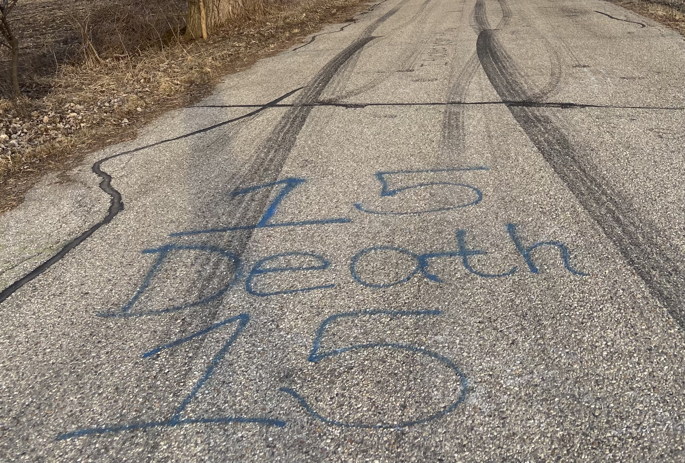

Weary Road is a random road in Southern Wisconsin that resides in the middle of nowhere. Farm land and pastures as far as the eye can see. What’s interesting about this skinny-little-two-lane road is that both sides of the road are lined with a canopy of trees, creating an enclosure that separates the road from the rest of the world. Given that there aren’t any trees anywhere else in the area, the road begins to feel pretty eerie and claustrophobic. Also the road is apparently haunted, which is why I set off to explore it.
First let's look into the literature of the Weary Road hauntings. And by literature I mean this
single Wikipedia article
. Seriously, there’s like nothing on this road besides it being haunted. Every detail was spared in the write
ups on the road. Apparently there’s an Old Man Weary character that haunts the road, but you have to visit Weary
Road three times before you can see him. There’s also no other info on Mr. Weary. So we’re rocking with some pretty
vague ideas right now. Other write ups say that the road may be haunted by the ghosts of teenagers who accidentally
crashed off the bridge on Weary Road and died. Again, it seems like a horror movie cliche. Also I saw that bridge
and it was about 3 feet high. I don’t think anyone is crashing, dying, and haunting this road. Moving on.
Honestly, the road was pretty fun to drive down. I felt like I was in a low budget horror movie a la Jeepers
Creepers. I parked my car on the side of the road and walked down it too. There was a lot of graffiti from local
kids on the pavement, some vulgar and some silly. I didn’t see any Mr. Wearys on the road, although to be fair I
only drove up there once so far (but I doubt I’d see anything on the third round either). One of the trees on the
road had something sticking out of it and upon further inspection it was a geocache, which was an exciting find.
Ultimately, do I think that road is haunted? No. But do I think anything is haunted? Also no. The journey was a fun
one, however, so I definitely recommend it if you have a hankering for a mini road trip and some time to kill.
Scariest part of the whole journey wasn’t even on Weary Road but when I was trying to find it after losing cell
service. I was looking for the train tracks I had to turn on and this truck almost off roaded me and then sped past.
What a jerk. Then again, I didn’t look in the driver’s window. Perhaps that was just Old Man Weary saying hi.